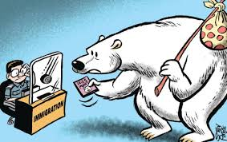
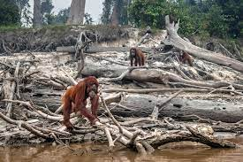

-
Environmental migration
One of the biggest challenges we will
face as a result of climate change is
the massive migration of people to the
less climate-endangered areas. Given that
large portions of our planet will become
virtually uninhabitable, people will begin
to move en masse in an effort to fulfil their
basic needs. There will be local conflicts over
land and resources− the worst-case scenarios envisage
a global conflict− and other impacts, for instance,
increasing gaps and segregation between the rich and
the poor, and the disintegration of nation-states.

-
Hotter temperatures
As greenhouse gas concentrations rise, so does the global surface temperature.
The last decade, 2011-2020, is the warmest on record. Since the 1980s, each decade
has been warmer than the previous one. Nearly all land areas are seeing more hot days
and heat waves. Higher temperatures increase heat-related illnesses and make working
outdoors more difficult. Wildfires start more easily and spread more rapidly when conditions
are hotter. Temperatures in the Arctic have warmed at least twice as fast as the global average.
severe stormsIncreased drought

A warming, rising oceanLoss of species

Not enough foodMore health risks
|
|